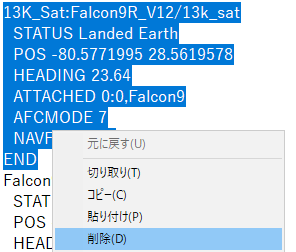
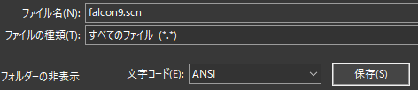
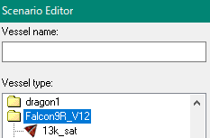

F1を押してコクピット視点にすると、HUD上に使用可能なキーの一覧が表示される。
| P | ペイロードを指定する |
| L | 軌道要素を入力する |
| M | 第一段の打ち上げパラメータを設定 |
| K | 第一段の着陸目標を設定 |
| B | 第一段の自動着陸を有効／無効にする |
| V | 10秒後に打ち上げオートパイロットを実行 |
| N | 第一段を分離する※ |
| J | フェアリング・ペイロードを分離する※ |
| E | カメラの向きを前後に切り替える |
※オートパイロット実行中は自動で分離される
打ち上げを実行して、第一段を分離したらF3キーを押す。
Falcon9_Stg1を選択してOKをクリックすると、第一段を操作できる。※
※第二段はオートパイロットでそのまま軌道投入される
| K | 着陸目標を設定 |
| B | 自動着陸を有効／無効にする |
| V | フライバック（着陸地点への弾道飛行）を実行※ |
| N | 再突入姿勢に入る※ |
| M | 着陸地点へ降下（高度15kmから）※ |
| P | 使用するエンジンを選択（9基・3基・1基） |
| J | グリッドフィンを展開 |
| G | 着陸脚を展開 |
| E | カメラの向きを前後に切り替える |
※自動着陸を無効にしているときに使用する
| G | 整備塔を倒す／立ち上げる |
| K | 夜間照明を点灯／消灯 |
| V | LOX（液体酸素）の排出による霧を消す／霧を出す |
キーボードでLを押すと、Inc（軌道傾斜角）が設定できる。
数字を入力したらEnterを押す。
もう一度Lを押すとApA（遠地点高度）、その次はPeA（近地点高度）が設定できる。
Vを押すと、設定した軌道へと全自動で打ち上げられる。
搭載できるのは、Attachment pointがある、つまりロボットアームで掴めるものに限られる。
まず初めに、Falcon9に何も搭載されていない状態のシナリオを作成する。
Scenarios\Falcon9R v1.2\Test scenariosフォルダを開く。
13K to LEO(LZ1 flyback flyback).scnをメモ帳などのテキストエディタで開く。
以下の行をすべて削除して、適当な名前を付けて保存する。※
※拡張子は.scn

13K_Sat:Falcon9R_V12/13k_sat
STATUS Landed Earth
POS -80.5771995 28.5619578
HEADING 23.64
ATTACHED 0:0,Falcon9
AFCMODE 7
NAVFREQ 0 0
END
ATTACHEDという行は、そのペイロードがほかの宇宙船に接続されていることを意味する。
数字が取り付け位置を示し、一番右に取り付け先の宇宙船の名前を記述する。
作成したシナリオでゲームを開始する。
シナリオエディタを使って、ゲーム内で搭載したいペイロードを追加する。
シナリオエディタ 宇宙船の追加
Pを押して、追加したペイロードの名前を入力してEnterを押す。
これでFalcon9ロケット第二段の先端に追加したペイロードが搭載される。
ペイロードとしてStar48BVキックモーターを追加できる。
また、Star48BVにさらにペイロードを搭載することも可能。
シナリオエディタを開いて、宇宙船の追加画面にする。
Falcon9R_V12フォルダを開いて、star48bvを選択して追加する。

Pを押して、Falcon9にStar48を搭載する。
F3キーを押して、Star48に乗り換える。
この状態でPを押すと、Star48に別のペイロードを搭載することができる。
Jを押すと分離される。
注意：Star48は固体ロケットなので、一度点火すると燃焼終了までエンジンを消せない。